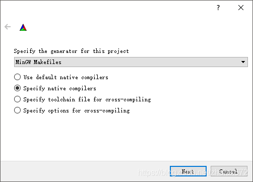

配置windows下的vscode的opencv
今天上课老师给的代码是win底下的opencv代码，所以给win安一下opencv
但我又不想用vs studio，所以还是vscode！
参考博客https://blog.csdn.net/zhaiax672/article/details/88971248
配置MINGW
我surface虽然安ruby的时候安了mingw，但是加了对应的环境变量后 gcc –version还是没反应。所以又去单独下了mingw，中途选配置的时候架构选x86架构，安在以下路径。
C:\Program Files\mingw-w64\x86_64-8.1.0-posix-seh-rt_v6-rev0\mingw64\bin
此电脑属性高级属性环境变量添加上面的路径。关闭终端再打开 写入gcc –version，有反应即可。
配置cmake
单独下载cmake解压，配置系统环境变量路径如下
C:\Users\19735\cmake-3.20.2-windows-x86_64\bin
将 opencv-3.4.5-vc14_vc15.exe 解压
在 opencv\build\x64 路径下新建一个 文件夹（可自起，这里是 MinGW ）
运行 cmake-3.9.0-rc3-win64-x64\bin\cmake-gui.exe
where is the source code: 选择opencv路径的sources
where to build the binaries: 选择opencv路径的build的x64的mingw
点configure，选择如下

选择 MinGW 中的 C 和 C++ 编译的exe程序
我的路径： C:\Program Files\mingw-w64\x86_64-5.3.0-posix-seh-rt_v4-rev0\mingw64\bin
C：gcc.exe
C++ : g++.exe
设置完毕点击 Finish，耐心等待进度条读完，直到输出窗口看到 Configuring done。再次点击 Configure 等待进度条读完。之后点击Generate 等待进度条读完，出现 Generating done。
这时，可以看到 opencv\build\x64\MinGW 的文件夹下新增了好多东西。
在dos框（windows power shell 也可以）里，利用 cd 命令 切换到opencv\build\x64\MinGW，输入 minGW32-make 命令
出现error invalid register for .seh_savexmm
Error 1 invalid register for .seh_savexmm
打开cmake-3.9.0-rc3-win64-x64\bin\cmake-gui.exe，search：cpu_di CPU_DISPATCH 应该使用AVX2
然后重复之前configurate generate的操作
编译时间15：36-17.18。。。。。。。。。。。。。。
编译完成之后，输入 minGW32-make install 来完成装载。
最后，配置环境变量 path ：
C:\Users\19735\Documents\opencv\opencv\build\x64\MinGW\bin
项目配置
launch.json "miDebuggerPath" 改成自己的。
{
// Use IntelliSense to learn about possible attributes.
// Hover to view descriptions of existing attributes.
// For more information, visit: https://go.microsoft.com/fwlink/?linkid=830387
"version": "0.2.0",
"configurations": [
{
"name": "(gdb) Launch",
"type": "cppdbg",
"request": "launch",
"program": "${workspaceFolder}/${fileBasenameNoExtension}.o",
"args": [],
"stopAtEntry": false,
"cwd": "${workspaceFolder}",
"environment": [],
"externalConsole": true,
"MIMode": "gdb",
"miDebuggerPath": "C:/Program Files/mingw-w64/x86_64-8.1.0-posix-seh-rt_v6-rev0/mingw64/bin/gdb.exe",
"preLaunchTask": "g++",
"setupCommands": [
{
"description": "Enable pretty-printing for gdb",
"text": "-enable-pretty-printing",
"ignoreFailures": true
}
]
},
]
}
tasks.json 修改 “-I” 和 “-L” 的路径。 ”-l“的路径去-L底下找自己下载的版本号
{
// See https://go.microsoft.com/fwlink/?LinkId=733558
// for the documentation about the tasks.json format
"version": "2.0.0",
// "label": "g++",
"command": "g++",
"args": [
"-g",
"-std=c++11",
"${file}",
"-o",
"${fileBasenameNoExtension}.o",
"-I", "C:\\Users\\19735\\Documents\\opencv\\opencv\\build\\include",
"-I", "C:\\Users\\19735\\Documents\\opencv\\opencv\\build\\include\\opencv2",
"-I", "C:/Users/19735/Documents/opencv/opencv/build/include/opencv2",
"-I", "C:\\Users\\19735\\Documents\\opencv\\opencv\\build\\include\\opencv",
"-L", "C:\\Users\\19735\\Documents\\opencv\\opencv\\build\\x64\\MinGW\\lib",
"-l", "opencv_core341",
"-l", "opencv_imgproc341",
"-l", "opencv_imgcodecs341",
"-l", "opencv_video341",
"-l", "opencv_ml341",
"-l", "opencv_highgui341",
"-l", "opencv_objdetect341",
"-l", "opencv_flann341",
"-l", "opencv_imgcodecs341",
"-l", "opencv_photo341",
"-l", "opencv_videoio341"
],// 编译命令参数
"problemMatcher":{
"owner": "cpp",
"fileLocation":[
"relative",
"${workspaceFolder}"
],
"pattern":[
{
"regexp": "^([^\\\\s].*)\\\\((\\\\d+,\\\\d+)\\\\):\\\\s*(.*)$",
"file": 1,
"location": 2,
"message": 3
}
]
},
"group": {
"kind": "build",
"isDefault": true
}
}
新建一个c_cpp_properties.json includePath的路径为自己的，compilerPath 同理。
{
"configurations": [
{
"name": "win",
"includePath": [
"${workspaceFolder}/**",
"C:/Users/19735/Documents/opencv/opencv/build/include/opencv2",
"C:\\Users\\19735\\Documents\\opencv\\opencv\\build\\include",
"C:\\Users\\19735\\Documents\\opencv\\opencv\\build\\include\\opencv2",
"C:\\Users\\19735\\Documents\\opencv\\opencv\\build\\include\\opencv"
],
"defines": [],
"compilerPath": "C:/Program Files/mingw-w64/x86_64-8.1.0-posix-seh-rt_v6-rev0/mingw64/bin/gdb.exe",
"cStandard": "c11",
"cppStandard": "c++17",
"intelliSenseMode": "clang-x64"
}
],
"version": 4
}
版权声明：本博客所有文章除特殊声明外，均采用 CC BY-NC 4.0 许可协议。转载请注明出处 做秧歌star的钢琴